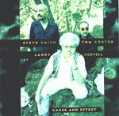

Home Artist links Label link

Coryell/Coster/Smith - Cause And Effect
| Artist: | Coryell/Coster/Smith |
| Title: | Cause And Effect |
| Label: | Tone center TC 40022 |
| Length(s): | minutes |
| Year(s) of release: | 1998 |
| Month of review: | [05/2002] |
Line up
Larry Coryell - guitar
Tom Coster - keyboards
Steve Smith - drums
Tracks
| 1) | These Are Odd Times | 7.53
|
| 2) | Plankton | 4.35
|
| 3) | Wrong Is Right | 7.15
|
| 4) | Bubba | 6.02
|
| 5) | Cause And Effect | 0.49
|
| 6) | Nightvisitors | 8.07
|
| 7) | Miss Guided Missile | 8.38
|
| 8) | First Things First | 7.51
|
| 9) | Night Visitors Revisited | 2.17
|
| 10) | Finale: Wes And Jimi | 8.11
|
Summary
Another threesome on Tone Center, all of whom had name of their own
before getting together for this one.
The music
Do not believe the tracks listed on the back, because the album contains two
more, shorter tracks. The first of the tracks, These Are Odd Times shows
that the band has to be reckoned with, and by adding keyboards to the
standard drum and guitar, instead of adding a bass which seems to be usual
with Tone Center bands, the sound is more proggy than others. This first features
pumping rock with a raw guitar sound and quite groovy at that. The keyboard
playing is also quite raw. Playful and melodious, with some nice flowing drumming
by Smith and Wooten guesting on bass we come, via a Fender Rhodes solo to
some proggy interplay between keys and guitar. This is really good fusion.
The ending with organ and keys is warm.
Plankton is more rootsy and bluesy with a lot of organ influenced by the Nice.
The gait is sluggy. Plain jazz with fast cymbal playing we find on the meandering
Wrong Is Right. The guitar is typical for jazzrock and can not really
enthuse me. Groovy, funky fusion returns on Bubba, with the organ doing the
bass part. The titletrack is only a short intermezzo after which we come
to Nightvisitors. The bass and the keys hold themselves in, while the raw
energy guitar and drums plod on, low and heavy. Quite a heavy track this one
with a sharp wailing guitar.
Miss Guided Missile I like a lot less. Too much fiddling around here on this
boring improvisational piece. The same holds for First Things First with
its slow fiddly jazz. More hectically the music becomes on Night Visitors
Revisited, but again the band fiddles around too much. Compositionally and
melodically the band seems to fall short at the end of this album.
Or do they? No, because Finale: Wes And Jimi is blues and jazzrock wedged in
between some nice church organ playing. Would have been nicer to have some
keyboards in the middle as well.
Conclusion
I am in two minds about this one. The music is certainly not laid back
or uneventful. The drumming is great as always, the guitar is raw edged
but tends to meander a bit too much for my tastes. For progressive rock fans,
the tasty elements come from Coster, whose varied keyboards/organ and
the like adds a new dimension, something which can not be often said for the
bass so often heard on this type of album. However, after a promising first
track, the keyboards and organ do not figure that much and I feel the variety
in the music is thereby lessened and the music boils down to straightforward
jazzrock too easily.
© Jurriaan Hage